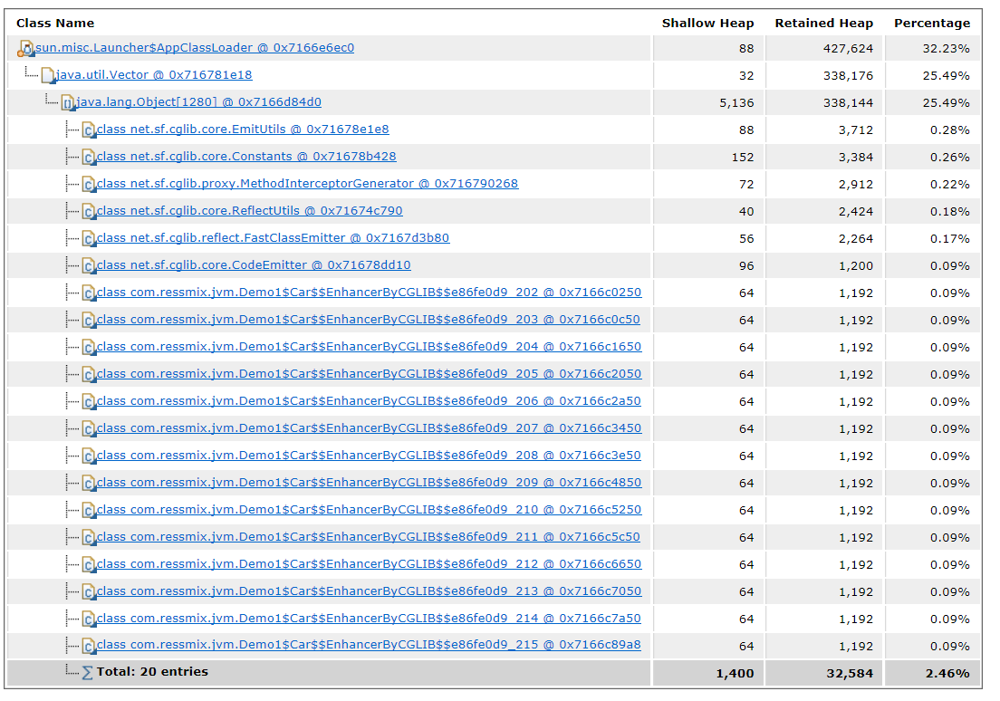

JVM实战（28）——模拟Metaspace内存溢出
一、简介
本章，我们将通过示例代码演示Metaspace区域是如何发生内存溢出的，并根据内存快照进行分析。
我们回顾下Metaspace区发生内存溢出的一个场景：程序不停的动态生成类，然后不停的加载类到Metaspace区域，而且这些动态生成的类必须得是不能被回收的，一旦Metaspace区满了，就会触发Full GC，而由于Metaspace区中的对象无法被回收，此时就触发了Metaspace内存溢出。
二、示例程序
我们的示例程序采用CGLIB来动态生成类。
2.1 程序源码
public class Demo1 {
public static void main(String[] args) {
long count = 0L;
while (true) {
Enhancer enhancer = new Enhancer();
enhancer.setSuperclass(Car.class);
enhancer.setUseCache(false);
enhancer.setCallback(new MethodInterceptor() {
public Object intercept(Object o, Method method, Object[] objects, MethodProxy methodProxy) throws Throwable {
if (method.getName().equals("run")) {
System.out.println("Before run, security checking...");
return methodProxy.invokeSuper(o, objects);
} else {
return methodProxy.invokeSuper(o, objects);
}
}
});
Car car = (Car) enhancer.create();
car.run();
System.out.println("Created " + ++count +" Car.");
}
}
static class Car {
public void run() {
System.out.println("Car is running...");
}
}
static class SafeCar extends Car{
@Override
public void run() {
System.out.println("Car is running...");
super.run();
}
}
}
上述代码，通过CGLIB的Enhancer生成了一个Car的代理子类：
Enhancer enhancer = new Enhancer();
enhancer.setSuperclass(Car.class);
enhancer.setUseCache(false);
既然是Car的子类，就会有Car的所有方法，然后我们在调用子类的run方法时做了点手脚：
enhancer.setCallback(new MethodInterceptor() {
public Object intercept(Object o, Method method, Object[] objects, MethodProxy methodProxy) throws Throwable {
if (method.getName().equals("run")) {
System.out.println("Before run, security checking...");
return methodProxy.invokeSuper(o, objects);
} else {
return methodProxy.invokeSuper(o, objects);
}
}
});
上述这段代码的意思是：如果调用了Car子类对象的方法，会先被这里的MethodInterceptor拦截，拦截后判断如果是run方法，则先做一些额外的工作——汽车安全检查，最后再执行父类的run方法。效果等同于：
static class SubCar extends Car {
@Override
public void run() {
System.out.println("Before run, security checking...");
super.run();
}
}
2.2 JVM参数
接着，我们需要通过JVM参数限制下Metaspace区域的大小，我们把它设置为10MB，然后开启内存溢出时自动dump内存快照：-XX:MetaspaceSize=10m -XX:MaxMetaspaceSize=10m -XX:+UseParNewGC -XX:+UseConcMarkSweepGC -XX:+PrintGCDetails -Xloggc:gc.log -XX:+HeapDumpOnOutOfMemoryError -XX:HeapDumpPath=./
使用该参数执行程序，可以看到如下所示的打印输出，当创建到第258辆Car时，Metaspace区的内存被耗尽了，导致java.lang.OutOfMemoryError: Metaspace：
Created 258 Car.
java.lang.OutOfMemoryError: Metaspace
Dumping heap to ./\java_pid11836.hprof ...
Heap dump file created [3470456 bytes in 0.120 secs]
Exception in thread "main" net.sf.cglib.core.CodeGenerationException: java.lang.reflect.InvocationTargetException-->null
at net.sf.cglib.core.AbstractClassGenerator.generate(AbstractClassGenerator.java:348)
at net.sf.cglib.proxy.Enhancer.generate(Enhancer.java:492)
at net.sf.cglib.core.AbstractClassGenerator$ClassLoaderData.get(AbstractClassGenerator.java:117)
at net.sf.cglib.core.AbstractClassGenerator.create(AbstractClassGenerator.java:294)
at net.sf.cglib.proxy.Enhancer.createHelper(Enhancer.java:480)
at net.sf.cglib.proxy.Enhancer.create(Enhancer.java:305)
at com.ressmix.jvm.Demo1.main(Demo1.java:27)
Caused by: java.lang.reflect.InvocationTargetException
at sun.reflect.GeneratedMethodAccessor1.invoke(Unknown Source)
at sun.reflect.DelegatingMethodAccessorImpl.invoke(DelegatingMethodAccessorImpl.java:43)
at java.lang.reflect.Method.invoke(Method.java:498)
at net.sf.cglib.core.ReflectUtils.defineClass(ReflectUtils.java:459)
at net.sf.cglib.core.AbstractClassGenerator.generate(AbstractClassGenerator.java:339)
... 6 more
Caused by: java.lang.OutOfMemoryError: Metaspace
at java.lang.ClassLoader.defineClass1(Native Method)
at java.lang.ClassLoader.defineClass(ClassLoader.java:763)
... 11 more
三、问题分析
上述程序执行完后，会在程序根目录生成两个文件：gc.log和java_pid11836.hprof，gc.log是JVM运行时信息，java_pid11836.hprof就是内存快照。
3.1 GC日志分析
我们先来分析下gc.log：
1.218: [GC (Allocation Failure) 1.276: [ParNew: 52480K->2051K(59008K), 0.0160380 secs] 52480K->2051K(190080K), 0.0745051 secs] [Times: user=0.05 sys=0.00, real=0.08 secs]
1.631: [GC (Allocation Failure) 1.631: [ParNew: 54531K->2855K(59008K), 0.0025661 secs] 54531K->2855K(190080K), 0.0026505 secs] [Times: user=0.00 sys=0.00, real=0.00 secs]
1.881: [Full GC (Metadata GC Threshold) 1.881: [CMS: 0K->2708K(131072K), 0.0464583 secs] 36239K->2708K(190080K), [Metaspace: 9885K->9885K(1058816K)], 0.0467198 secs] [Times: user=0.05 sys=0.01, real=0.05 secs]
1.927: [Full GC (Last ditch collection) 1.927: [CMS: 2708K->1749K(131072K), 0.0104116 secs] 2708K->1749K(190144K), [Metaspace: 9885K->9885K(1058816K)], 0.0104936 secs] [Times: user=0.02 sys=0.00, real=0.01 secs]
2.012: [GC (CMS Initial Mark) [1 CMS-initial-mark: 1749K(131072K)] 1749K(190144K), 0.0001810 secs] [Times: user=0.00 sys=0.00, real=0.00 secs]
2.012: [CMS-concurrent-mark-start]
2.022: [CMS-concurrent-mark: 0.011/0.011 secs] [Times: user=0.05 sys=0.00, real=0.01 secs]
2.057: [CMS-concurrent-preclean-start]
2.058: [CMS-concurrent-preclean: 0.001/0.001 secs] [Times: user=0.00 sys=0.00, real=0.00 secs]
Heap
par new generation total 59072K, used 1363K [0x0000000701a00000, 0x0000000705a10000, 0x00000007166c0000)
eden space 52544K, 2% used [0x0000000701a00000, 0x0000000701b54c68, 0x0000000704d50000)
from space 6528K, 0% used [0x0000000704d50000, 0x0000000704d50000, 0x00000007053b0000)
to space 6528K, 0% used [0x00000007053b0000, 0x00000007053b0000, 0x0000000705a10000)
concurrent mark-sweep generation total 131072K, used 1749K [0x00000007166c0000, 0x000000071e6c0000, 0x00000007c0000000)
Metaspace used 9912K, capacity 10090K, committed 10240K, reserved 1058816K
class space used 890K, capacity 913K, committed 1024K, reserved 1048576K
2.063: [GC (CMS Final Remark) [YG occupancy: 1363 K (59072 K)]2.063: [Rescan (parallel) , 0.0002642 secs]2.063: [weak refs processing, 0.0000124 secs]2.063: [class unloading, 0.0012829 secs]2.065: [scrub symbol table, 0.0005776 secs]2.065: [scrub string table, 0.0001698 secs][1 CMS-remark: 1749K(131072K)] 3112K(190144K), 0.0024292 secs] [Times: user=0.00 sys=0.00, real=0.00 secs]
先触发了两次Young GC，主要是因为不断创建Car对象，最终Eden区无法容纳。我们关键看下Full GC，第一次Full GC如下：
1.881: [Full GC (Metadata GC Threshold) 1.881: [CMS: 0K->2708K(131072K), 0.0464583 secs] 36239K->2708K(190080K), [Metaspace: 9885K->9885K(1058816K)], 0.0467198 secs] [Times: user=0.05 sys=0.01, real=0.05 secs]
Metadata GC Threshold告诉我们是因为Metasapce区空间不足而引起Full GC。可以看到，Metasapce区的对象已经快占满了10MB了——[Metaspace: 9885K->9885K(1058816K)]，经过这次Full GC，里面的对象并没有被回收掉，接着就进行下一次Full GC，这是最后的拯救机会（Last ditch collection）：
1.927: [Full GC (Last ditch collection) 1.927: [CMS: 2708K->1749K(131072K), 0.0104116 secs] 2708K->1749K(190144K), [Metaspace: 9885K->9885K(1058816K)], 0.0104936 secs] [Times: user=0.02 sys=0.00, real=0.01 secs]
结果还是一样，Metaspace区中的对象依旧无法回收，也不够容纳新创建的类对象，所以JVM直接终止运行，并打印出最后的堆内存的情况。
3.2 内存快照分析
我们通过MAT工具来对内存快照java_pid11836.hprof进行分析：

可以看到，大量的AppClassLoader占用了内存，点击Details继续看，发现里面有一大堆Car$$EnhancerByCGLIB对象，正是因为CGLIB动态生成的这些类导致了Metaspace被占满：

于是我们排查代码，看到底是哪里不断的动态创建类对象，发现Enhancer对象没有做缓存，所以只要加上缓存，不要无限制去生成类就可以了。
四、总结
本章，我们通过一个程序示例，不断利用CGLIB生成动态代理类的方式，模拟了Metaspace区内存溢出的场景。下一章，我们将模拟Java虚拟机栈内存溢出。